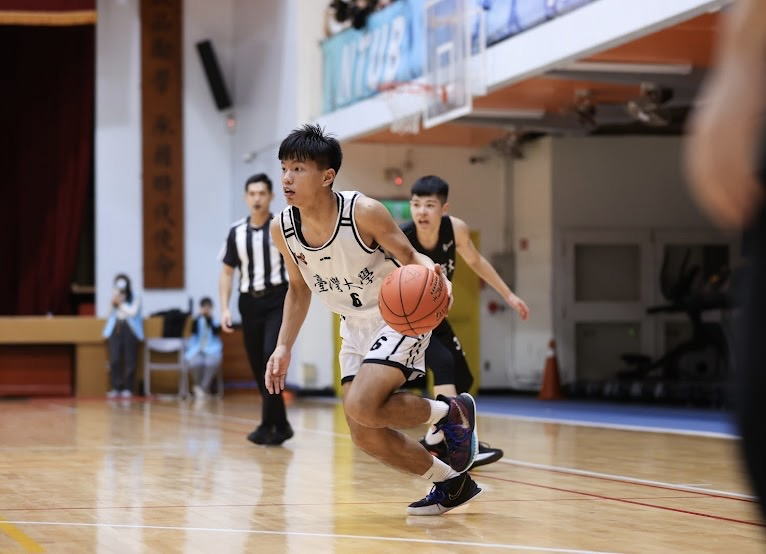
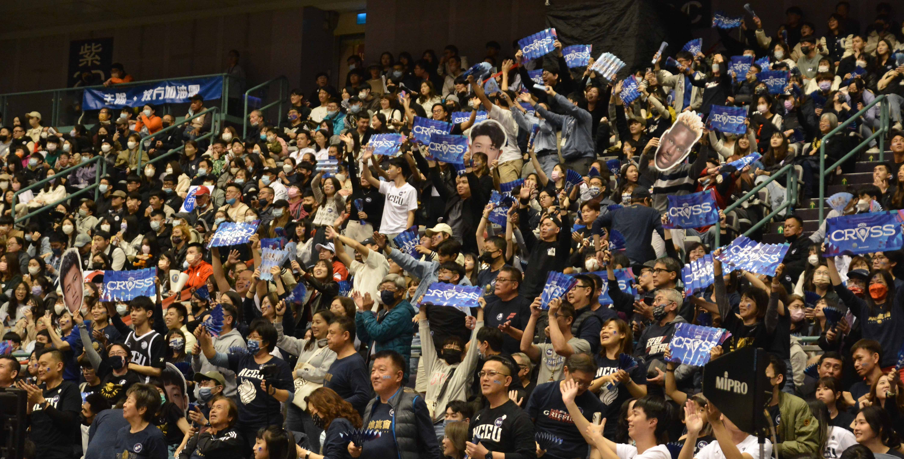
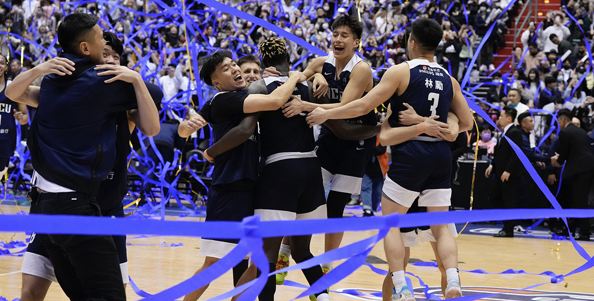
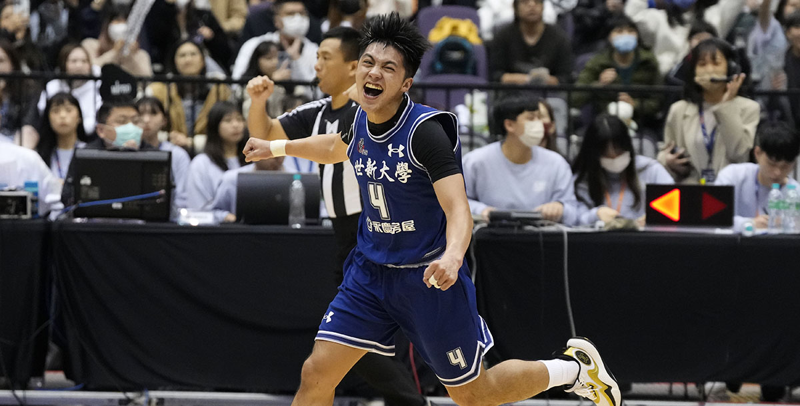
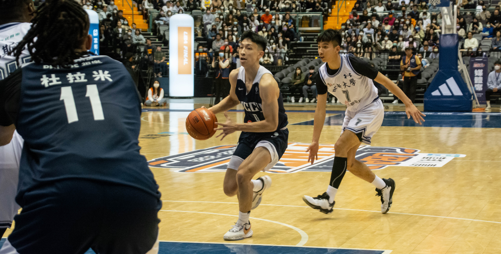

2023-05-21
用籃球寫出自己的故事 黃韋凱將遺憾化為助力勇敢追夢
我覺得臺灣大學是學生籃球的最高殿堂！」秉持這個想法，去年順利考上國立臺灣大學生化科學研究所的黃韋凱將自己推向嚮往的舞台， 同時也將與學長許致銓再度一起打球設為目標。經過一連串的準備、入選臺大籃球隊，儘管過程看似相當順遂，但自認實力欠缺的他始終抱持著謙虛的態度，將這一切歸功於...

2023-03-29
公開一決賽成就精彩賽事 球迷力量必不可少
111學年度富邦人壽UBA大專籃球聯賽在3月26日圓滿落幕。今年是UBA在小巨蛋舉行的第六個賽季，除去108學年受疫情影響採閉門比賽外， 每年決賽兩日皆吸引萬名球迷進場支持，也因為有球迷的一路力挺，以實際行動支持賽事與球隊，才能成就一年又一年的精彩賽季。本季的UBA決賽，除了場上打得激...

2023-03-29
隊長游艾喆MVP五冠入袋政大3連霸 送1分鐘傷退的林彥廷
大三主控游艾喆本季新高21分8籃板3助攻領軍，尤其填補大四後衛林彥廷開賽第1分鐘就扭傷腿、退場不克再戰的得分空缺， 衛冕軍政大得以在第四節拉出21：13強勢尾盤，突破前三節50：48小幅領先的僵局， 26日71：61力克決賽頭號種子健行科大，連續3季在臺北小巨蛋決賽2連勝，拿下111學年度富邦人...

2023-03-29
跨3、4節17：0世新逆襲拿第三 土洋4人及臺師3人將選秀、林信寬未定
靠跨三、四節的17：0攻勢，上兩季第二世新大學26日克服大一菜鳥球星陳將双第三節最後2分鐘傷了右腳踝退場的困難，67：64後來居上力克臺師大， 拿下在臺北小巨蛋舉行的111學年度富邦人壽UBA大專籃球聯賽男一級季軍，無緣連3季爭冠，第三作收也OK。 睽違2季重返四強的臺師，上半場靠大三「一哥...

2023-03-28